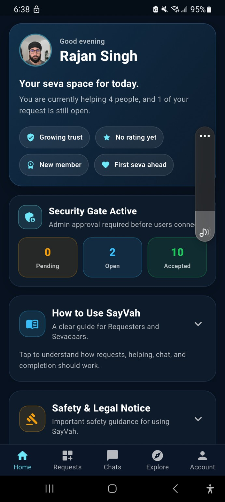
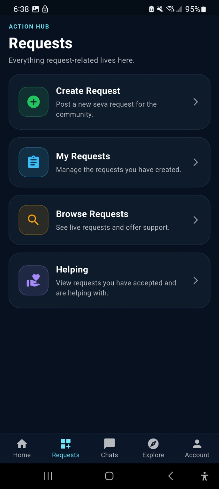
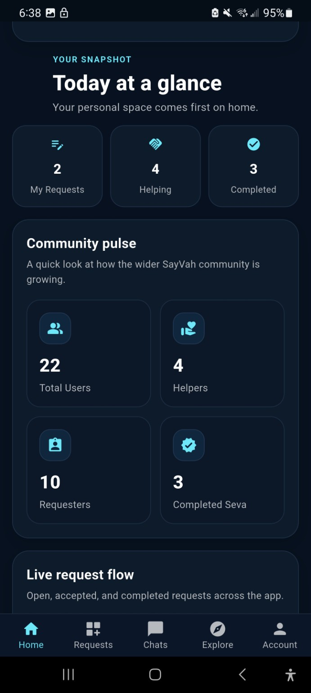
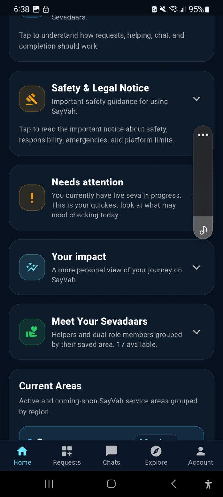
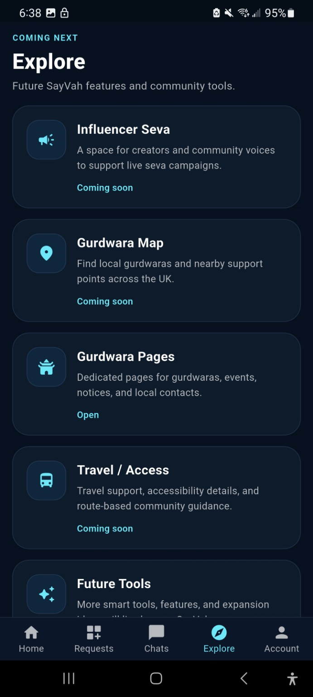

SayVah connects people who need help with people willing to help.
Someone can create a practical support request. A suitable local volunteer can then offer to help. The app keeps the request, communication and progress together in one place.
SayVah is already available on iOS and Android. Ahead of the official community launch, we are building the first local network of people requesting practical help, volunteers offering time, and organisations supporting selfless seva.


SayVah is already available on iOS and Android. The official community rollout begins on 1 September 2026, and early volunteers are especially welcome as we build the first trusted local network.
Early community figures will grow as SayVah moves through launch area by area.
Think of this as the no-confusion guide. If you have never heard of seva, sevadaars or the app before, this is everything you need to know.
Someone can create a practical support request. A suitable local volunteer can then offer to help. The app keeps the request, communication and progress together in one place.
Seva means selfless service — giving your time, effort or skills to help someone else without expecting something in return.
A sevadaar is simply a volunteer doing seva. On SayVah, these are the people offering practical support through the platform.
SayVah is inspired by Sikh values, but the aim is practical community support. You do not need to already understand Sikh terminology to use the platform.
Choose whether you need support or want to volunteer. The process is deliberately straightforward.
Download SayVah, sign up and add your basic profile details.
Say what support you need, the general area, and when you need it.
Suitable sevadaars can browse the request and offer to help.
Check available profile information and follow the approval process before meeting anyone.
Keep the key information clear and organised inside SayVah.
Once the help has been provided, the request can be closed as completed.
Add a clear photo, your area and enough information for requesters to understand who you are.
Open the Requests area and view support opportunities that suit you.
Choose a request you genuinely have the time and ability to support.
Do not turn up or make assumptions. Follow the app's connection and approval process.
Use in-app chat to agree the relevant time, place and task details.
Help respectfully and update the request when the support is finished.
We're starting small and growing area by area. Join the launch list if you want to volunteer, use SayVah for support, represent a Gurdwara or organisation, or simply follow the project.
Help us build the first trusted local volunteer network before launch. Choose when you're available and only take on seva that suits you.
The website uses the same visual language as the app: dark navy surfaces, cyan guidance, saffron safety accents and simple cards.
The home screen shows your requests, people you are helping, progress, local community information, safety notices, active areas and access to beginner guidance.


Post a practical support request for the community.
See suitable live requests and offer your support.
Manage your own requests and the requests you are helping with.
Gurdwara pages, maps, travel support and future community tools.

SayVah includes safety controls and clear expectations around how users connect. The platform is designed to support sensible, respectful community interaction — not blind trust.
Where the workflow requires it, connections can be subject to admin approval before users proceed.
Users can review the available profile information before accepting or offering support.
Inappropriate behaviour can be reported through the platform for review.
Users can block accounts where continued contact is unwanted or inappropriate.
Keeping request communication together makes arrangements easier to understand and review.
Gurdwara and organisation affiliations can provide an additional layer of community context and administration.
If someone is in immediate danger or requires urgent professional help, contact the appropriate emergency service. Never share passwords, banking credentials or unnecessary sensitive information through a request.
See what information SayVah collects, why it is needed, where it is stored, who can access it and the controls available to you.
SayVah processes personal information to provide the service, connect requesters with Sevadaars, operate community safety features, administer accounts and support participating areas and organisations.
This section explains the main categories of information used by SayVah, how that information is used and the controls available to users.
SayVah explains the main account, activity, communication, safety, location and website information used to operate the service.
SayVah does not describe data as time-limited, UK-only, end-to-end encrypted or automatically deleted unless that is confirmed by the implemented service.
SayVah includes location-related functionality associated with active Seva and safety features. Location information is not intended to be displayed publicly to the wider SayVah community.
Messages are stored as part of the SayVah service and are intended for the participants involved in the relevant conversation or request. Authorised SayVah administrators may access relevant conversations when necessary for platform administration, moderation, safeguarding, investigating reports or resolving disputes. SayVah does not describe messages as end-to-end encrypted.
Verification decisions and review status are recorded against the user's SayVah account. Authorised administrators can review and approve or deny verification. Verification records may include whether the account is verified, the verification status, approval status, review date, reviewing administrator and review message. SayVah does not currently operate a general ID-document upload system unless an identity document is specifically requested through an implemented verification process.
Account information: name, email address, Firebase account identifier, profile information, profile photograph where supplied, account role, selected area or location, and account or verification status.
SayVah activity: requests created, requests accepted or helped with, request status and activity, completed Seva, ratings or feedback where used, and help connections.
Communication: in-app chats, messages associated with requests, message timestamps and conversation participants.
Safety and administration: reports, moderation information, verification status, verification review information, account restrictions such as hidden or banned state, and Gurdwara or organisation affiliation where applicable.
Location-related information: location or session information where a location-enabled SayVah feature is being used.
Website launch signups: name, email address, area, interest, optional message, consent, submission time and source.
SayVah uses information to create and administer accounts, connect requesters with Sevadaars, manage requests, support in-app communication, operate safety reporting, review verification, maintain community areas, support Gurdwara or organisation involvement where applicable, and contact launch-list users about SayVah updates they consented to receive.
SayVah uses Google Firebase and Google Cloud services to operate its backend infrastructure. Firebase Authentication is used for account authentication. Cloud Firestore is used for application data such as users, requests, chats, reports, locations, organisations and launch signups. Firebase and Google Cloud infrastructure also supports backend functionality, including launch signup notifications.
SayVah has Firebase Storage configured, but this public information should not be read as confirmation that a general user-file upload flow is active. Google may process or store data through the infrastructure used to provide these services. SayVah does not describe user data as being stored exclusively in the United Kingdom unless that can be guaranteed by the configured service.
Other users: Other SayVah users may see information required for community interaction, such as public profile information, name or profile image where displayed, role, area, verification or trust indicators, and information intentionally included in a community request.
Authorised SayVah administrators: Authorised SayVah administrators can access account and platform information where required to operate the service, review verification, investigate reports, manage requests and maintain community safety. This can include access to relevant in-app conversations where required for moderation, safeguarding or investigation of a report.
Gurdwaras and organisations: SayVah stores Gurdwara and organisation records and affiliation information where applicable. SayVah does not state that every Gurdwara or organisation can see every user's information.
No. Your account email address is not intended to be displayed publicly to other SayVah users. Authorised SayVah administrators may access account email information where required for administration, support, verification, safety review or account management.
Private contact details, internal account fields, moderation information, reports and verification review information are not intended for public display. Relevant administrators may access these records where required to operate SayVah and maintain community safety.
SayVah can record Gurdwara or organisation names, areas, status and administrator or manager fields, along with user affiliation where applicable. More specific Gurdwara or organisation access rights should only be stated once they are confirmed in the live app and access rules.
When a user submits a safety report, SayVah stores information needed to review that report. Authorised administrators can review reports and relevant associated account, request or conversation information in order to investigate and take appropriate action. Implemented administrator actions include resolving or dismissing reports, reviewing verification, hiding a user and banning or restricting a user.
SayVah provides an in-app account deletion process. Account deletion removes the user's account through the implemented deletion process. Some associated information may need to be retained where necessary for security, dispute handling, legal obligations or the integrity of records. The complete retention treatment will be specified in the full Privacy Notice.
SayVah retains information while it is required to operate accounts, requests, communications, safety functions and platform records. A formal retention schedule is being established for categories including messages, completed requests, reports and location-session information.
Users can update supported profile information, manage relevant account settings, report or block users where implemented, delete their account using the in-app deletion feature, and contact SayVah about information associated with their account.
If you have a question about how SayVah uses your information, privacy, account data or a safety-related concern, contact SayVah directly.
Privacy & Data: rajan@s3dsystems.com
The website can later pull approved public sevadaar profiles directly from Firebase. For now, this section explains what visitors should expect to see.
Camberley area
Frimley area
Local area
Only profiles specifically approved for public display should appear here. Private contact details, exact addresses and private request information should remain inside the app.
SayVah is being introduced area by area so the community and volunteer network can grow responsibly. Active areas below are loaded directly from the SayVah platform.
These guides mirror the simple card-based style used inside the app.
This can later become a live public view of approved Community Q&A content from the app.
No. SayVah is inspired by the Sikh principle of seva, but the website and app are designed to explain the process clearly to anyone who is new to it.
Suitable everyday practical support, such as shopping collection, simple technology help, community event support, local transport or another reasonable task that fits the platform.
You can review the profile information available to you and follow the app's request and approval process before connecting.
Do not continue the interaction. Use the reporting or blocking tools where appropriate and contact the SayVah team. If there is immediate danger, contact the emergency services.
No. SayVah is for community support and should not be used instead of emergency, medical, safeguarding or other professional services.
Download the app now, join the launch list, and be ready for the official community launch on 1 September 2026.
Before you join, read how SayVah handles your information. Privacy & Data
Use this for app support, volunteer questions, organisation enquiries or general guidance.
Include enough information for the team to understand the issue, but avoid putting unnecessary sensitive personal information in an email.